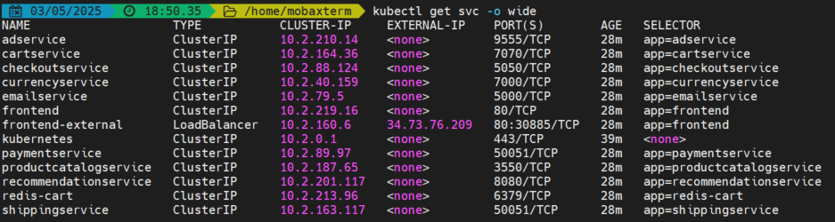

This project contains Terraform configurations to deploy a Google Kubernetes Engine (GKE) cluster with custom networking settings.
The cluster is configured with the following IP ranges:
| Component | IP Range |
|---|---|
| Nodes | 10.0.0.0/16 |
| Pods | 10.1.0.0/16 |
| Services | 10.2.0.0/16 |
The project creates a custom VPC network and subnet with secondary IP ranges for pods and services. This enables VPC-native routing for the GKE cluster.
Pods CIDR Range:

Services CIDR Range:
terraform plan output before applying changes. Place this in the Usage section before deployment steps.kubectl get nodes and kubectl get pods --all-namespaces outputs. Place this in the Usage section after deployment.The project uses a Terraform module located in infra/modules/gke to encapsulate the GKE cluster setup. The module provisions the cluster, node pools, and networking resources.
| Name | Description | Type | Default | Required |
|---|---|---|---|---|
| project_id | GCP project id | string | n/a | Yes |
| region | Region | string | us-east1 | No |
| node_locations | Availability zones of the GKE nodes | list(string) | n/a | Yes |
| node_ip_range | IP address range of GKE nodes | string | 10.0.0.0/16 | No |
| pod_ip_range | IP address range of Kubernetes pods | string | 10.1.0.0/16 | No |
| service_ip_range | IP address range of Kubernetes services | string | 10.2.0.0/16 | No |
| version_prefix | Kubernetes engine version prefix | string | n/a | No |
| machine_type | Node instance category | string | n/a | No |
| cluster_name | GKE cluster name | string | online-boutique-demo | No |
| Name | Description |
|---|---|
| region | GCloud Region |
| kubernetes_cluster_name | GKE Cluster Name |
| kubernetes_cluster_host | GKE Cluster Host |
| cluster_ca_certificate | Base64 encoded cluster CA certificate |
| client_certificate | Base64 encoded client certificate |
| client_key | Base64 encoded client key |
The node pool is configured with the following settings:
machine_type variableFollow these steps to deploy the GKE cluster:
git clone https://github.com/cvitaa11/gke-demo.git
cd gke-demo/infra/example
terraform.tfvars file with your project settings:
project_id = "your-project-id"
region = "your-desired-region"
node_locations = ["your-desired-AZs"]
terraform init
terraform plan
Consider adding a screenshot of this output here.
terraform apply
gcloud container clusters get-credentials $(terraform output -raw kubernetes_cluster_name) --region $(terraform output -raw region)
Consider adding a screenshot of kubectl get nodes output here.
To destroy the created resources, run:
terraform destroy
Notes:
You may add additional screenshots or diagrams here as needed.